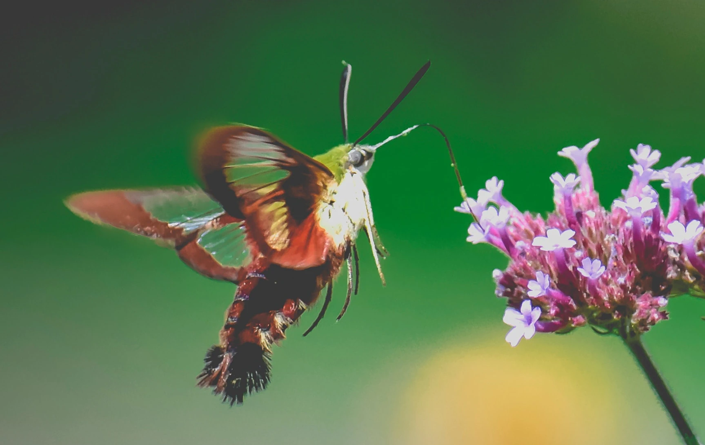

About
Hello! I'm Thysbelon; first name “Dana”. I'm a guy and my pronouns are he/him. I graduated from college with a degree in Web Design and Development in Spring of 2024. I love programming and technology, and I love to use them to make art. My main interests are:
- web development
- digital art
- digital photography
- digital design
On my blog, I post about things that I find interesting or inspiring; video games I like; beautiful designs; and guides on how to do very specific, obscure things that I couldn't find a guide on!
My Main Strengths
Rather than use a visual website builder like WordPress to make my website, I carefully coded everything by writing the HTML, CSS, and JavaScript myself. This means that my website runs faster, has better SEO, and is more accessible than websites made hastily using a visual editor. I also designed this website myself, and I have designed two other websites for my courses using Figma (prototype) and Wix (website).
I also use a static site generator to automate some website building tasks on this blog; for example, I do not have to manually alter the home page everytime I write a new post thanks to the static site generator. The static site generator I used in the past was Jekyll, but I am now using Eleventy.
Aside from my blog, I also often use Emscripten to take a program written in C, compile it to WebAssembly, and turn it into a webapp/library for other programmers to use.
I draw and make music occasionally. I practice piano every week, and I like to cover other people's songs occasionally. I use Krita to draw. Music making apps I've used include Reaper, GarageBand, and LMMS; I also enjoy using music software specialized for chiptune (retro game music) like FamiStudio and Furnace Tracker. My most recent drawing and cover are in this post.
last, I love taking photos, and I use a Panasonic Lumix MKII camera.
What I Have Studied
In my New Media Projects course, I gained real-world experience working with a client and conducting interviews.
As I mentioned in the section above, I have created a website prototype in Figma for my web design course, and a Wix website with three fully written blog posts for my digital marketing course. All of my web design assignments are archived on the UI UX page.
In my Digital Storytelling course, I learned about video creation (Script-writing, filming, and editing). You can watch a video I made to see what I'm capable of.
In my course on Databases, I learned how to create and manage an organized database, how to create queries using SQL, and how to use Microsoft Access. For my final in this course, I created a database that could be used for a hypothetical Rhythm Heaven video game with user-created content.
In my Digital Design course, I learned about brand development. I have created:
- a logo
- two 3D models
- a design brief
- three social media ads
You can see my finished work in my portfolio, and my creative process on the Digital Design page. Some of the skills I learned from that are:
- Design Thinking
- how to use Illustrator
- how to use the video timeline in Photoshop
- how to create new design iterations based on feedback
During brand development, I think carefully about what the brand's values are, and how to communicate them visually. I pay close attention to any and all feedback and try my best to improve my designs.
I also studied Digital Photography. I can:
- Use a camera with full manual controls
- Use Camera Raw and Photoshop to retouch photos
My favorite subjects to take photos of are plants, animals, and insects!


There are subjects that I enjoy studying in my free time. They are:
- Japanese
- the piano
- digital art
- HTML
- CSS
- JavaScript
- Eleventy
- Emscripten
I love learning new things about web development, and I'm always trying to improve my website!
You can read about the apps I compiled with Emscripten on my programs page.
I have studied the following a little in College:
- Python
- the Unity game engine
- systems analysis and design
- Visual Basic
Why the name “Thysbelon?”
I chose my name because of the Hummingbird Clearwing Moth, whose scientific name is Hemaris thysbe. I first heard about this animal on the internet, and I always loved the way it looked. To me, it was one of those wonderful animals you hear about and you love, even though you'll probably never see one in person. That is, until the day I did see one in person, hovering around a flower bush. I was overjoyed! Apparently, they live close to me. From then on, it became my favorite local animal; and when I was trying to think of animals to use for a name, I knew it was the one.
The "lon" part doesn't mean anything; I just wanted to make sure no-one confused my name for the real moth. 
Where You Can Find Me
You can find me on Bluesky, GitHub, YouTube, Tumblr, cohost, Mastodon, and Reddit @Thysbelon. If you have any questions for me, or feedback about the site, please message me.